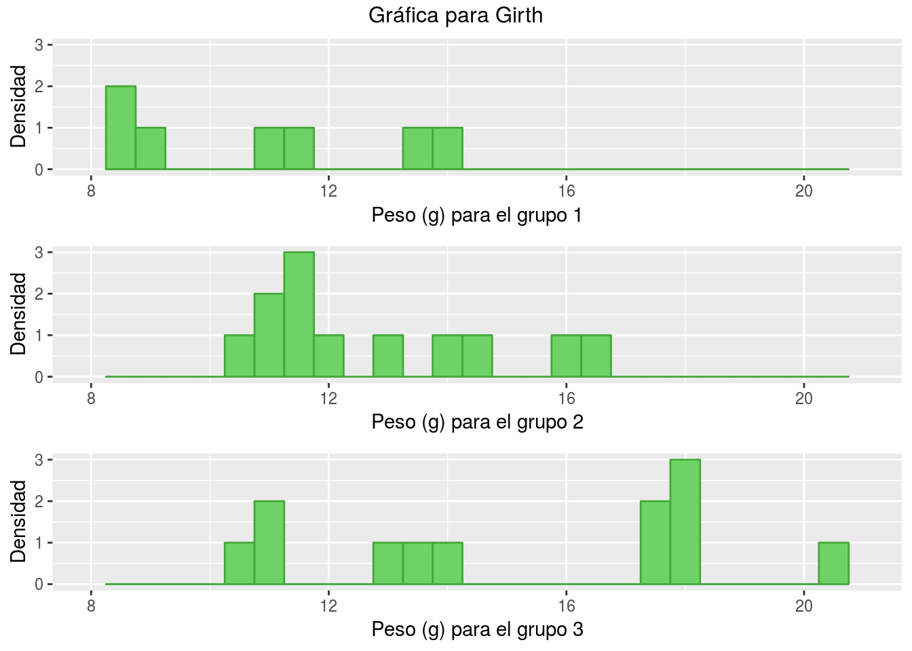
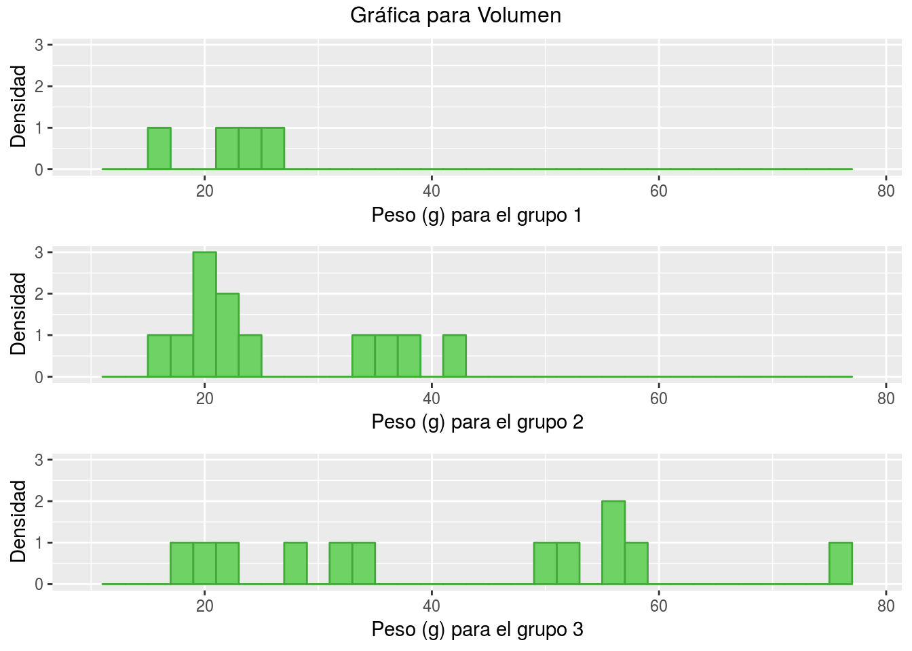
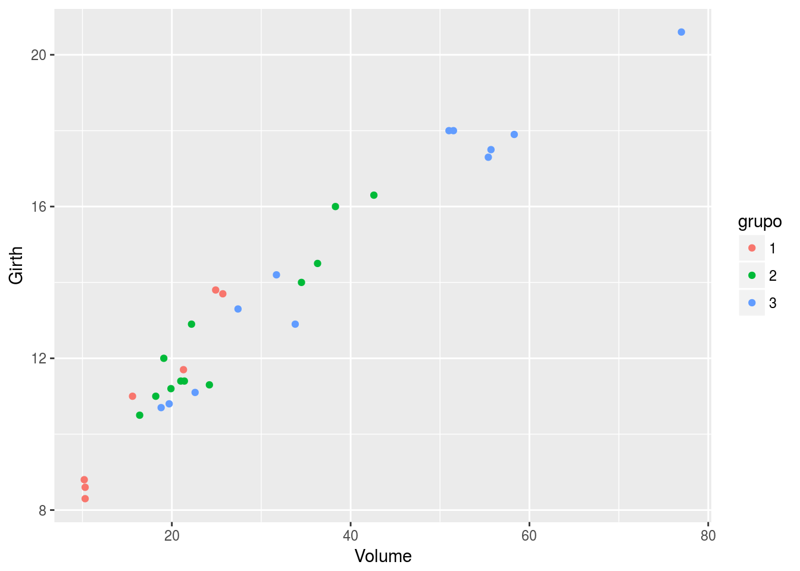
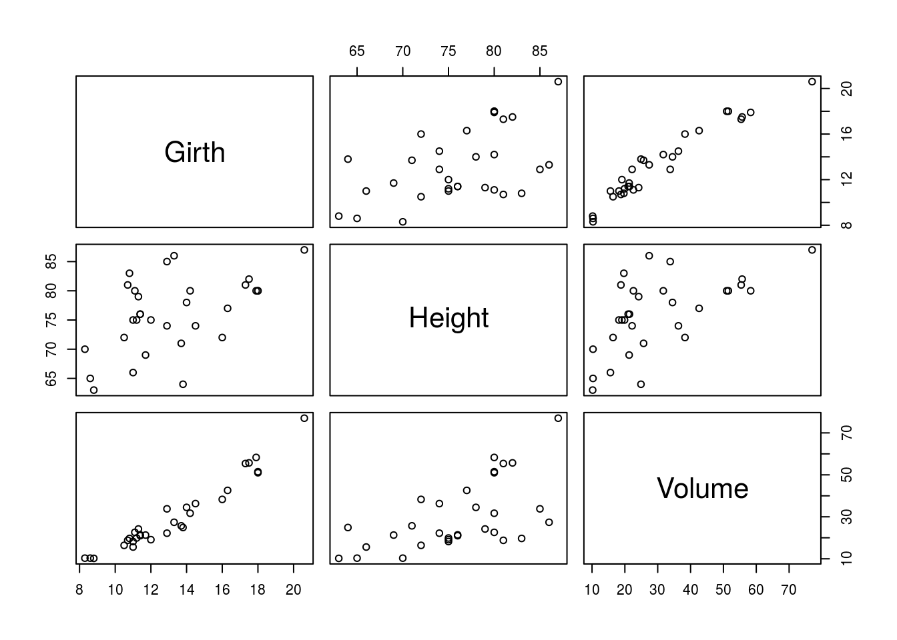

Ejercicio 2 - trees
2.1 Cargando los datos
Cargamos la librería trees.
data(trees)
attach(trees)
head(trees)## Girth Height Volume
## 1 8.3 70 10.3
## 2 8.6 65 10.3
## 3 8.8 63 10.2
## 4 10.5 72 16.4
## 5 10.7 81 18.8
## 6 10.8 83 19.7Veamos un breve resumen de los datos.
summary(trees)## Girth Height Volume
## Min. : 8.30 Min. :63 Min. :10.20
## 1st Qu.:11.05 1st Qu.:72 1st Qu.:19.40
## Median :12.90 Median :76 Median :24.20
## Mean :13.25 Mean :76 Mean :30.17
## 3rd Qu.:15.25 3rd Qu.:80 3rd Qu.:37.30
## Max. :20.60 Max. :87 Max. :77.002.2 Gráfico de grupos de Height
Vamos a escoger 3 grupos en los que dividir Height. Por ejemplo,
cut(c(63,87),breaks=3)## [1] (63,71] (79,87]
## Levels: (63,71] (71,79] (79,87]Dividimos los grupos como sigue,
df.G1 = subset(trees, Height <= 71,select=c("Girth","Volume"))
df.G2 = subset(trees, 71 < Height & Height <= 79,select=c("Girth","Volume"))
df.G3 = subset(trees, 79 < Height ,select=c("Girth","Volume"))Para hacer los gráficos, usaremos la librería ggplot2, y para representar los distintos grupos en la misma gráfica gridExtra
library(ggplot2)
library(gridExtra)Calculamos las gráficas,
pg1 <- ggplot(df.G1, aes(x=Girth)) +
geom_histogram(binwidth = 0.5, colour="#43A939", fill="#6ED364") +
labs(x="Peso (g) para el grupo 1", y = "Densidad") +
xlim(8, 21) + ylim(0, 3)
pg2 <- ggplot(df.G2, aes(x=Girth)) +
geom_histogram(binwidth = 0.5, colour="#43A939", fill="#6ED364") +
labs(x="Peso (g) para el grupo 2", y = "Densidad") +
xlim(8, 21) + ylim(0, 3)
pg3 <- ggplot(df.G3, aes(x=Girth)) +
geom_histogram(binwidth = 0.5, colour="#43A939", fill="#6ED364") +
labs(x="Peso (g) para el grupo 3", y = "Densidad") +
xlim(8, 21) + ylim(0, 3)
grid.arrange(pg1,pg2,pg3, top="Gráfica para Girth")
library(ggplot2)
require(gridExtra)
pg1 <- ggplot(df.G1, aes(x=Volume)) +
geom_histogram(binwidth = 2, colour="#43A939", fill="#6ED364") +
labs(x="Peso (g) para el grupo 1", y = "Densidad") +
xlim(10, 78) + ylim(0, 3)
pg2 <- ggplot(df.G2, aes(x=Volume)) +
geom_histogram(binwidth = 2, colour="#43A939", fill="#6ED364") +
labs(x="Peso (g) para el grupo 2", y = "Densidad") +
xlim(10, 78) + ylim(0, 3)
pg3 <- ggplot(df.G3, aes(x=Volume)) +
geom_histogram(binwidth = 2, colour="#43A939", fill="#6ED364") +
labs(x="Peso (g) para el grupo 3", y = "Densidad") +
xlim(10, 78) + ylim(0, 3)
grid.arrange(pg1,pg2,pg3, top="Gráfica para Volumen")
2.3 Gráfica de dispersión
Vamos a crearnos un dataframe que contenga todos los elementos diferenciados por el grupo según su altura al que pertenezca.
df.G1$grupo <- c("1")
df.G2$grupo <- c("2")
df.G3$grupo <- c("3")
df.Grupos = rbind(df.G1,df.G2,df.G3)Con este dataframe, obtenemos la siguiente gráfica,
qplot(Volume,Girth,data=df.Grupos,col=grupo)
2.4 Regresión para cada par de variables
Antes vamos a realizar un estudio preliminar de la relación de las variables.
pairs(trees)
Vamos a crear una aplicación Shiny para interactuar con los modelos.
# require(shiny)
# shinyApp(
#
# ui = fluidPage(
#
# titlePanel("Regresión de Y~X"),
#
# sidebarLayout(
#
# sidebarPanel(
# selectInput("variable1", "Variable Y:",
# choices=c("Girth", "Height", "Volume")),
# hr(),
# selectInput("variable2", "Variable X:",
# choices=c("Girth", "Height", "Volume"))
# ),
#
# mainPanel(
# fluidRow(column(12, verbatimTextOutput("correlacion")))
# )
#
# )
# ),
#
# server = function(input, output) {
#
# output$correlacion <- renderPrint({
# summary(lm(trees[input$variable1][,1] ~ trees[input$variable2][,1]))
# #trees[input$variable1][,1],
# })
# },
#
# options = list(height = 750)
# )Además vamos a interactuar con su coeficiente de correlación lineal
# require(shiny)
# shinyApp(
#
# ui = fluidPage(
#
# titlePanel("Coeficiente de regresión de Y~X"),
#
# sidebarLayout(
#
# sidebarPanel(
# selectInput("variable1", "Variable Y:",
# choices=c("Girth", "Height", "Volume")),
# hr(),
# selectInput("variable2", "Variable X:",
# choices=c("Girth", "Height", "Volume"))
# ),
#
# mainPanel(
# fluidRow(column(12, verbatimTextOutput("correlacion")))
# )
#
# )
# ),
#
# server = function(input, output) {
#
# output$correlacion <- renderPrint({
# cor(trees[input$variable1][,1],trees[input$variable2][,1])
# })
# },
#
# options = list(height = 400)
# )Observamos que las variables Girth y Volumen tienen un coeficiente de correlación alto, luego podemos decir que el ajuste de Girth y Volumen es bastante bueno.